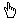

このページでは、HaptiChem システムのアプリケーションで共通な操作をまとめています。
もくじ：
「ケモじゅん」使用手引きの「ビューアのウィンドウ操作」も参照してください。
HaptiChem システムは、SPIDAR-G へ力を提示したり、位置を取得してウィンドウの表示を変更する為に、SPIDAR-G と接続しています。
これらのボタンでSPIDAR-G との接続状態を制御できます。
SPIDAR-G と接続せずにシステムを利用している時でも、HaptiChem 側のみで動作します。
ただし、ボタンを押しても動作に変化がない場合は、ボタンが押される状態にはなりません。
SPIDAR-G と接続して操作している時は、ホームポジションを設定します。
ダイアログが出ますので、SPIDAR-G のグリップを移動させて、「OK」ボタンを押してください。
力の提示を感じやすくするために、フレームの中心（モータから等距離の位置）にホームポジションを設定することをおすすめします。
|
SPIDAR-G と接続していない場合は、ツール毎に決められたホームポジションに、グリップが移動します。
表示タスクを実行します。
ボタンが押されている状態で、SPIDAR-G と通信してグリップの位置を取得し、ホストコンピュータのウィンドウ内のグリップの位置を動かします。
ボタンを押されていない状態では、SPIDAR-G でグリップを動かしても、ウィンドウ内のグリップは停止したままになります。
力覚タスクを実行します。
ボタンが押されている状態で、SPIDAR-G と通信して力を提示します。
ボタンを押されていない状態では、SPIDAR-G にツールからの力の提示はなくなり、最低張力で引かれている状態になります。
HaptiChem ボタンが配置されているウィンドウ選択時にキーボードショートカットを利用できます。
ただし、ウィンドウの選択状態や、SPIDAR-G との接続状態、ツールなどの条件によっては、利用できません。
※ 106 かな漢字キーボード対応
| c (Calibration) | キャリブレーションを行います。 キャリブレーションボタンを押すのと同様です。 |
| r (Reset) | |
| Esc | |
| v (Visual) | 表示タスクのオン／オフを切り替えます。 視覚ボタンを押すのと同様です。 |
| d (Display) | |
| Enter | |
| h (Haptic) | 力覚タスクのオン／オフを切り替えます。 力覚ボタンを押すのと同様です。 |
| f (Force) | |
| Space |
SPIDAR-G に接続していない場合、マウスやキーで、操作対象の位置を移動できます。
動かせる範囲は、各ツール（もしくは連動しているビューファインダ）で表示される境界箱の内部のみになります。
SPIDAR-G に接続していない場合、位置移動をするのにマウスを利用できます。
ビューア内でマウスをドラッグすると、マウスカーソルの形が  （fingerPointer）に変化します。
マウスカーソル位置に、ビューア内のグリップがついてきます。
投影平面上でのみの操作になりますので、グラブボタンやホィールなどで視線方向を変えて、操作してください。
SPIDAR-G に接続している時は、マウスでドラッグしてもグリップは移動しません。
SPIDAR-G を利用して位置を動かしてください。
SPIDAR-G に接続していない場合、位置移動をするのにキーボードショートカットを利用できます。
ただし、ウィンドウの選択状態や、ツールなどの条件によっては、利用できません。
※ 106 かな漢字キーボード対応
| ← | 操作対象を、矢印の方向へ移動します。 [Shift]キーと同時に押すと、移動速度が変化します。 |
| → | |
| ↑ | |
| ↓ |